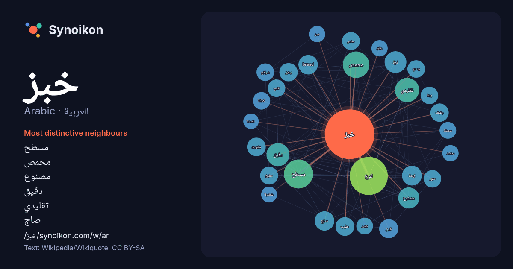

العربية · Arabic · word of the day list
خبز
“bread” · The words found around it in 1234 instances from Arabic Wikipedia, Wikiquote.

Most distinctive neighbours
- مسطح 57×
- محمص 50×
- مصنوع 29×
- دقيق 29×
- تقليدي 28×
- صاج 28×
- bread 28×
- زبدة 27×
- مفرود 26×
- ذرة 26×
- فرن 25×
- يخبز 25×
- رغيف 25×
- نوع 25×
- مخمر 24×
- تنور 23×
- كعكة 22×
- يصنع 21×
- حليب 21×
- شرائح 21×
× = how many times more often than in general Arabic Wikipedia text.
Most frequent neighbours
- نوع 104
- مسطح 60
- محمص 50
- انواع 44
- تقليدي 42
- عادة 39
- دقيق 38
- ذرة 34
- مصنوع 32
- عربي 29
- زبدة 28
- bread 27
- صاج 27
- ابيض 26
- فرن 26
- حليب 25
- مفرود 25
- رغيف 24
- يخبز 24
- مخمر 23
In context
- الخُبْز هو الغذاء الرئيسي في الشرق الأوسط وأوروبا والهند وشمال أفريقيا. الخبز دائما يتكون من طحين (القمح أو الذرة أو الشعير) والماء، والملح والخميرة غالباً Wikipedia snippets · خبز
- الخبز العربي أو خبز البيتا أو الخبز البلدي أو خبز الكماج أو الخبز اللبناني (اليونانية: πίτα) هو خبز مفرود ليّن مخمّر قليلاً، يصنع من دقيق القمح. يستخدم Wikipedia snippets · خبز عربي
- الخبزية أو شجرة الخبز (الاسم العلمي: Artocarpus) هي جنس من النباتات يتبع الفصيلة التوتية من رتبة الورديات. الاسـم العلمي جاء من اليونانية (أرتوس == خبز Wikipedia snippets · خبزية
- الشيلم، الذي كان مناسبًا تمامًا لمناخها المعتدل. خبز فنلندي خبز العلس خبز الحمص خبز الدخن خبز الذرة خبز أسمر(خبز الشعير) ابن منظور. لسان العرب. مادة «شلم». Wikipedia snippets · خبز الشيلم
- بخبز الطابون. التنور خبز الفرن الطيني خبز الصاج خبز الشراك الخبز الجزائري خبز الكرواسان خبز الرقاق خبز فلزي خبز البطاطا خبز النان خبز التفتون "Børre Ludvigsen Wikipedia snippets · خبز التنور
- ذَرور الخَبْز أو مسحوق الخبز ويقال لها أيضا الخميرة الكيميائية (الإنجليزية: Baking powder) عبارة عن كربونات الصوديوم الهيدروجينية NaHCO3 ويستخدم في صناعة Wikipedia snippets · ذرور الخبز
- خبز الباجيت أو الخبز الفرنسي (الفرنسية: Baguette والإنجليزية) هو نوع من الخبز، فرنسيّ الأصل، معروف بحجمه الكبير وشكله اللولبي، وعلى الرغم من أنَّ هذا Wikipedia snippets · باجيت
- خبز الصاج أو خبز الشراك (التركية: Sac Ekmeği أو Yufka) أو خبز المرقوق أو خبز الرقاق أو خبز المهلول أو الخبز المرقّد أو الخُبْز المَشْروح هو نوع من أنوع Wikipedia snippets · خبز الصاج
More Arabic words
- أغنية
- إله
- تاريخ
- جبل
- جرس
- جزيرة
- جسر
- حديقة
- حصان
- حقيقة
- حياة
- خريطة
- خريف
- ذهب
- زمن
- ساعة
- شاي
- شتاء
- صحة
- صحراء
- صمت
- صيف
- طبيعة
- طريق
- طعام
- ظل
- عائلة
- عاصفة
- عسل
- علم
- عمل
- غابة
- فن
- قطار
- قطة
- قلب
- قوة
- كلب
- لغة
- ماء
- مال
- مدينة
- مرآة
- مطر
- ملح
- مناخ
- موت
- نجم
- والدة
Precomputed on 2026-10-09 with default settings (±5 words, medium corpus). The interactive map can refresh it with live data.